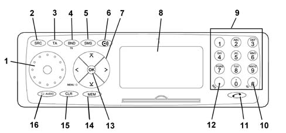
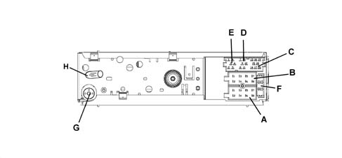
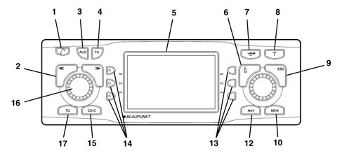
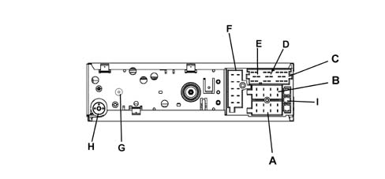
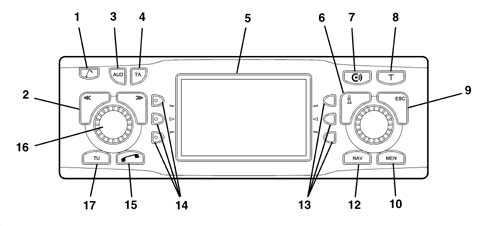
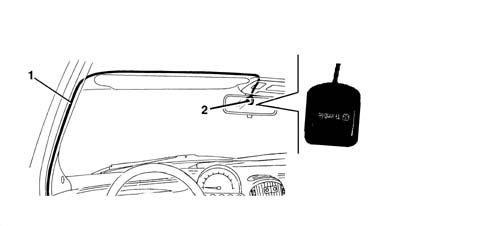

5580N intergrated control system (ics) panel
- Path
- Descriptions > 55 ELECTRICAL EQUIPMENT > 5580 SPECIAL ACCESSORIES > 5580N intergrated control system (ics) panel
- Kind
- system description
- Applies to
- all engines; all production periods
- Interactive page
- https://sloeber94.github.io/elrnDB-fMltpl/en/#/2888297
Applies to: all engines; production: da 09/03, da 04/02 a 08/03
CONSTRUCTION FEATURES
The vehicle is fitted as standard with a radio system that includes a basic radio with tape or CD.
This case, refer to 5570 ACCESSORIES
According to the specification, the following are supplied as options:
- Standard CONNECT device
- Radio with NAVIGATOR
- CONNECTdevice with NAVIGATION SYSTEM (CONNECT NAV)
CONNECT DEVICE
This is a Bosch RADIOPHONE radio customised especially for the FIAT MULTIPLA and includes the CONNECT device to log on to TARGASYS services.

Main controls
Main radiophone controls
1 - ON/OFF: Switching on/off, volume adjustment.
2 - SRC: Press this button to end phone mode and switch automatically to the most recent audio function (radio, cassette player or CD). Phone mode takes priority: it is not possible to switch to audio mode during a phone conversation or while attempting to call a phone number.
3 - TA:Press this key to cancel traffic information priority during a phone call.
4-BND: Press this button to transfer from phone operation using a handset to phone operation using microphone and speakers. Press the same key again to go back to operation using a handset.
5 - SMS: To recall a message
6-CONNECT function
7- Selection keys( / V : Use to move between the different items in the radio and phone menu.- << / >> Use to correct items in the phone directory or DSC (Direct Software Control) menu. Used to move the cursor to the left and right during data entry.
8- Display: Use the displays to operations carried out in radio mode (radio station, PIN code, radio channel search,..) or phone mode (number dialled, phone directory,...)
9 - Selection buttons: Used to dial phone numbers or select a number already stored on a SIM card. Press one of the keys on the right side of the keypad to answer a call.
10- AF / #: Use to enter special characters
11 - (phone symbol): Press this key to transfer to phone mode, to answer a call or to end a call
12 - MIX / *: Use to enter special characters, such as blank spaces, and select numbers stored on a SIM card directly.
13 - OK: Press the key to select the menu items and confirm that the data or operations have been stored.
14 - MEM: Used to activate the phone directory: press lightly to display the phone directory in alphabetical order. Hold the key down for longer to display phone numbers in order.
15 - CL: Use to delete the last data entries during the data input stage. Used during the menu selection stage to move to the next menu up from the current level (light pressure on the key) or exit from the current menu (sustained pressure on the key).
16- AUDIO:The microphone can be cut out during a phone call (the person at the other end of the phone cannot hear the conversation in the car).
See the 'OWNER'S HANDBOOK' for all operating instructions.
Radio pin out
The diagram below shows the rear view of the radio and the location of the connectors.

CONNECTOR A
Pin | Signal |
|---|---|
A1 | N.C. |
A2 | N.C. |
A3 | N.C. |
A4 | Direct power supply (+30) |
A5 | 12 V switchable for Aerial |
A6 | Lit up with side lights on |
A7 | Ignition-operated power supply (+15) |
A8 | Earth |
CONNECTOR B
Pin | Signal |
|---|---|
B1 | Right rear speaker + |
B2 | Right rear speaker - |
B3 | Right front speaker + |
B4 | Right front speaker - |
B5 | Left front speaker + |
B6 | Left front speaker - |
B7 | Left rear speaker + |
B8 | Left rear speaker - |
CONNECTOR C /D/ E
Pin | Signal |
|---|---|
C1 | N.C. |
C2 | N.C. |
C3 | N.C. |
C4 | N.C. |
C5 | N.C. |
C6 | N.C. |
D7 | Telephone for speakers in + |
D8 | Telephone for speakers in - |
D9 | Telephone mute |
D10 | N.C.. |
D11 | MIC - signal |
D12 | MIC + signal |
E13 | ASCI-BUS in (for CDC) |
E14 | ASCI-BUS out (for CDC) |
E15 | N.C. |
E16 | 12V switch (for CDC) |
E17 | ASCI -BUS Earth (for CDC) |
E18 | NF-Earth input (for CDC) |
E19 | Input L (for CDC) |
E20 | Input R (for CDC) |
CONNECTOR G
Radio aerial
CONNECTOR H
GSM aerial
F: 10A fuse
Connect function
It is possible to access a set of services known as CONNECT by entering into an agreement with TARGASYS.
- Infomobility
- Medical consultancy
- Roadsidde assistance
Operating principle
Communication from the vehicle to the CONTACT CENTER: when the user requires a service, the CONNECT automatically sends a message to the CONTACT CENTER with all the relevant details (position, vehicle data, reason for the request, etc.). - Communication from CONTACT CENTRE to vehicle. The CONTACT CENTRE sends a message to the vehicle to indicate that the request has been received; the operator then sends the information requested by the Customer via a text message or, in some cases (e.g. asking for medical advice ) calls the customer to speak on the phone.
The CONNECT memorizes the information, even if the Customer does not display it immediately (for example because they are driving). The Customer can then use the information received later on recalling it from the radio phone memory.
The location signals that reach the CONTACT CENTRE are encrypted in any case.
RADIO WITH NAVIGATOR
This is a BOSCH radio navigator customised especially for the FIAT MULTIPLA.
Satellite navigation system
The navigation system has road maps allowing the position of the vehicle on the map to be made known at any moment, showing it on the display. In this way, the driver is taken to the desired destination, guided step-by-step by voice messages and visual information. The system also provides additional information for reaching services of general interest, such as hotels, car parks, restaurants, chemists, service stations, hospitals, FIAT service outlets, railway stations, airports, etc.
The system provides:
- Voice messages on the route to follow.
- Display with driving advice, the estimated time and distance from the destination set.
- The possibility of entering special destinations.
- The possibility of memorizing destinations.
- If fitted, the navigator is in the radio-navigator unit.
The navigation system uses the GPS (Global Positioning System) satellite location technology; The GPS system consists of an aerial which allows the GPS satellite location of the vehicle: the aerial is connected to the relevant receiver, located in the integrated unit, via a specific shielded cable.
The CD-ROM reader for the radionavigator allows a special CD containing a map and all other information relating to a country to be read.
The gyroscope - located inside the central unit casing - detects the rotation of the vehicle and enables the map to be orientated.
The vehicle position is identified by the analysis of the GPS data and the speedometer and reverse gear signals coming from the car.
The suggestions given by the navigation system do not release the driver from full responsability for manoeuvres carried out in traffic while driving the car and for respecting the highway code and other traffic regulations. The responsibility for road safety is always expected from the driver of the vehicle.
When carrying out each manoeuvre, the highway code should be followed, irrespective of the navigation system's advice. If you should stray from the recommended route, the navigation system will devise a new route and suggest it to you.
WARNING:
- the navigation system should be used whilst keeping full control of the vehicle; if in doubt, stop in order to carry out the various operations;
- one should familiarize oneself with the audio/navigation system and controls before starting a journey;
- only enter the destination when the vehicle is stationary;
- The navigation system makes it posible to reach one's destination following a route stored on the navigation CD. When calculating the route the system takes into account all available information and suggests the optimum route. However, it does not take into account traffic conditions, sudden interruptions or any other problems. The navigation system helps the driver while driving and advises on the best route to the set destination by means of voice and graphic information.
Controls
All the controls are illustrated in the diagram.

1 Key for raising the front
2 Selector << >> The selector function depends on the menu and the types of operation
3 AUD button, opens the sound menu
4 The TA button activates/deactivates the RDS-TA (Traffic Announcement) function
5. Display
6. Info button i:
a) if this button is pressed whilst driving to your destination, the last navigation voice message is repeated and the destination activated will be displayed;
b) the menu items will be displayed in full ending with '...'
7. Button for activating 'AVOID CONGESTION' function (alternative route)
8. T; recalls the TRAFFIC menu
9. ESC button:
a) allows the escape from the menu without memorizing the changes;
b) allows the return to the previous menu/screen
10. MEN, activates the SETTINGS menu
11. Knob/button:
a) turning: allows the selection of items on the display;
b) pressing: confirms the selection (OK button);
c) pressing for more than 2 seconds: allows the choice of displaying 2 dimensional or 3 dimensionmal pictograms
12. NAV activates the navigation mode
13. Multifunction buttons, the function of these buttons depends on the contents of the menu
14. Multifunction buttons, the function of these buttons depends on the contents of the menu
15. CD-C activates the CD mode (if an audio CD is already inserted) or CD CHANGER (if fitted)
16. Knob/button:
a) turning: allows the adjustment of the volume;
b) pressing: switches the audio/navigation system on/off
17. TU activates the Radio mode
See the 'OWNER'S HANDBOOK' for all operating instructions.
Calibrating the equipment
The INSTALLATION menu makes it possible to calibrate the audio/navigation system using the following choices:
- SYSTEM TEST
- CALIBRATION
- GPS STATE.
The system cannot be calibrated when the 'closed' symbol is displayed in front of the word INSTALLATION.
'new installation' calibration
Proceed as follows:
- press the NAV button (12) to display the main navigation menu
- press the button (10) twice to display the SETTINGS menu (Setup)
- turn the knob/button (11) to select CALIBRATION
- press the knob/button (11) to confirm the selection
- select and confirm the NEW INSTALLATION function.
- carry out the operations requested by the system.
The system carries out a test for which it is necessary to travel for between 8 and 15 km with good GPS reception.
During the first 25% of the calibration procedure or in the case of the NEW INSTALLATION optionit is not possible to drive to the destination.
The route to be followed for the calibration depends on different factors, such as the quality of the GPS reception and driving to the destination. The mileage (km) information only refers to an average figure. It may be clearly lower or higher in the case of poor reception conditions.
System test
A test can be conducted on the system during which the GPS aerial, the correct transmission of the reverse signal and the correct connection of the vehicle to the system are checked.
Press the NAV button (12) to display the main navigation menu
Press the button (10) twice to display the SETTINGS menu (Setup)
Turn the knob/button (11) to select INSTALLATION
Press the knob/button (11) to confirm the selection
Turn the knob/button (11) to select SYSTEM TEST
Carry out the operations requested by the system.
When the system test is over, the installation menu is displayed automatically.
Press the ESC button (9) to return to the previous menu.
Calibration after changing tyres
The diagram below shows the calibration for the tyres.
After having changed the tyres, the audio/navigation system may have to be recalibrated. To calibrate it, proceed as follows:
- press the NAV button (12) to display the main navigation menu
- press the DSC button (8) twice to display the SETTINGS menu (Setup);
- turn the knob/button (11) to select INSTALLATION
- press the knob/button (11) to confirm the selection
- turn the knob/button (11) to select CALIBRATION
- select and confirm the TYRE CHANGE item
- carry out the operations requested by the system.
Calibration
System manual test
The system can be calibrated manually; to carry out this operation it is necessary to drive for 100 metres at a speed below 30 km/h, making sure of the accuracy of the distance travelled.
Proceed as follows:
- press the NAV button (12) to display the main navigation menu
- press the button (10) twice to display the DSC navigation menu;
- select and confirm the SETUP function
- turn the knob/button (11) to select INSTALLATION
- press the knob/button (11) to confirm the selection
- turn the knob/button (11) to select CALIBRATION
- press the knob/button (11) to confirm the MANUAL selection.
The display will show the editing menu to enter the length of the intended distance:
- select the first figure of the distance by turning the knob/button (11)
- press the knob/button (11) to confirm the figure
- continue in this way for the remaining figures to be keyed in
- confirm the distance by turning the knob/button (11) to the 'Enter' symbol
- press the knob/button (11) to confirm the selection.
At this point the display will show the request to travel the distance; to start the calibration, proceed as follows:
- turn the knob/button (11) to select START
- press the knob/button (11) to confirm the selection
- drive for 100 metres following the instructions given previously
- at the end of the 100 metres, stop and select CONFIRM and confirm using the knob/button (11) or INTERR.r to interrupt the procedure or ESC (9) to cancel.
Gps state
To obtain information on the number of GPS satellites which can currently be received and the location of the vehicle, proceed as follows:
- press the NAV button (12) and the display will show the main navigation menu
- press the button (10) twice to display the DSC navigation menu;
- select and confirm the SETUP function
- turn the knob/button (11) to select INSTALLATION
- press the knob/button (11) to confirm the selection and the display will show the INSTALLATION menu
- turn the knob/button (11) to select the GPS INFO display
- confirm the selection by pressing the knob/button (11).
Press the ESC button (9) to return to the previous menu.
Safety
Activating/deactivating the anti-theft protection
The anti-theft code can be activated/deactivated after having displayed the CODE-SETUP menu. When this protection is activated, if the battery is disconnected the system will only remain working if the anti-theft code is entered (see below: ENTERING ANTI-THEFT CODE)
To activate/deactivate the code, proceed as follows:
- press the NAV button (12) to display the main navigation menu
- press the button (10) twice to display the SETTINGS menu (Setup)
- turn the knob/button (11) to select SECURITY
- press the knob/button (11) to confirm the selection
- turn the knob/button (11) to select CODE
- press the knob/button (11) to select ON or OFF. The basic setting is ON (where the anti-theft code is activated). In any case the security code will be requested
- select the enter symbol by turning the knob/button (11)
- press the knob/button (11) to confirm the selection.
Activating/deactivating the anti-theft LED
The anti-theft LED can be activated/deactivated after having displayed the CODE-SETUP menu. To activate/deactivate the LED, proceed as follows:
- press the NAV button (12) to display the main navigation menu
- press the button (10) twice to display the SETTINGS menu (Setup)
- turn the knob/button (11) to select SECURITY
press the knob/button (11) to confirm the selection.
turn the knob/button (11) to select LED
press the knob/button (11) to select ON or OFF. The basic setting if ON (with the anti-theft LED activated)
Return to the basic settings
It is possible to return to the basic audio/navigation system settings:
- press the NAV button (12) to display the main navigation menu
- press the button (10) twice to display the SETTINGS menu (Setup)
- turn the knob/button (11) to select SYS. FACTORY.
- press the knob/button (11) to confirm the selection.
The display will show the following screens according to situation A , B or C.
Situation A) When a navigation CD is inserted, the display will show the reset request (cancellation) of all navigation values; all the memories for the destinations and route options are cancelled. To cancel the memories, proceed as follows:
- select YES by turning the knob/button (11)
- press the knob/button (11) to confirm the selection.
To keep the values in the memories intact:
- select NO by turning the knob/button (11)
- press the knob/button (11) to confirm the selection.
When there is no navigation CD present, the display moves directly onto the next question.
Situation B) The display shows the request to cancel the CD audio source settings in the memory.
To cancel the memories, proceed as follows:
- select YES by turning the knob/button (11)
- press the knob/button (11) for more than 2 seconds to confirm the selection.
To keep the values in the memories intact:
- select END by turning the knob/button (11);
- press the knob/button (11) for more than 2 seconds to confirm the selection.
Situation C) Lastly, the display will show the request for cancelling all the options selected in the SETTINGS menu (Setup) and the volumes for all the audio sources.
To cancel the memories, proceed as follows:
- select YES by turning the knob/button (11)
- press the knob/button (11) for more than 2 seconds to confirm the selection.
To keep the values in the memories intact:
- select NO by turning the knob/button (11)
- press the knob/button (11) for more than 2 seconds to confirm the selection.
Antitheft protection
The satellite navigator has an anti-theft protection system consisting of a 4 digit secret code.
The protection system renders the satellite navigation system inoperable once it has been extracted from the dashboard and stolen.
Code card
This document certifies the ownership of the satellite navigation system. It contains the model, serial number and secret code.
Entering the anti-theft code
When the audio/navigation system is switched on after there has been a break in the power supply (battery disconnected, equipment disconnected, fuse blown, etc.) the display will ask for the anti-theft code to be entered.
To enter the anti-theft code, proceed as follows:
- select the first digit of the code by turning the knob/button (11)
- confirm the first digit by pressing the knob/button (11)
- continue in the samy way for the other 3 digits until the anti-theft code is complete.
If an incorrect digit is entered, proceed as follows:
- turn the knob/button (11) to the 'left arrow' symbol
- press the knob/button (11) to confirm the deletion.
When the code is complete, select the enter symbol and confirm using the knob/button (11), then the equipment will switch itself back on in Radio mode.
Radio pin out
The diagram below shows the rear view of the radio and the location of the connectors.

CONNECTOR A
Pin | Signal |
|---|---|
A1 | Speedometer signal |
A2 | N.C. |
A3 | Reversing signal |
A4 | Direct power source (+30) |
A5 | 12 V switchable for Aerial |
A6 | Lit up with side lights on |
A7 | Ignition-operated power supply (+15) |
A8 | Earth |
CONNECTOR B
Pin | Signal |
|---|---|
B1 | Right rear speaker + |
B2 | Right rear speaker - |
B3 | Right front speaker + |
B4 | Right front speaker - |
B5 | Left front speaker + |
B6 | Left front speaker - |
B7 | Left rear speaker + |
B8 | Left rear speaker - |
CONNECTOR C/D/E
Pin | Signal |
|---|---|
C1 | N.C. |
C2 | N.C. |
C3 | N.C. |
C4 | N.C. |
C5 | N.C. |
C6 | N.C. |
D7 | N.C. |
D8 | N.C. |
D9 | N.C. |
D10 | Signal A steering wheel controls |
D11 | Signal B steering wheel controls |
D12 | Remote control earths and mute |
E13 | ASCI-BUS in (for CDC) |
E14 | ASCI-BUS out (for CDC) |
E15 | N.C. |
E16 | switchable 12V (for CDC) |
E17 | ASCI -BUS Earth (for CDC) |
E18 | NF-Earth input (for CDC) |
E19 | Input L (for CDC) |
E20 | Input R (for CDC) |
CONNECTOR F- not used
CONNECTOR H
Radio aerial
CONNECTOR G
GPS aerial
I: Fuse 10 A
CONNECT DEVICE WITH NAVIGATOR (CONNECT-NAV)
This is a BOSCH radio navigator customised specially for the FIAT MULTIPLA, integral with the CONNECT device.
Controls
All the controls are illustrated in the diagram.

1 Key for raising the front
2 Selector << >> The selector function depends on the menu and the types of operation
3 AUD button, opens the sound menu
4 The TA button activates/deactivates the RDS-TA (Traffic Announcement) function
5. Display
6. Info button i:
a) if this button is pressed whilst driving to your destination, the last navigation voice message is repeated and the destination activated will be displayed;
b) the menu items will be displayed in full ending with '...'
7. CONNECT function
8. T; recalls the TRAFFIC menu
9. ESC key:
a) allows the escape from the menu without memorizing the changes;
b) allows the return to the previous menu/screen
10. MEN, activates the SETTINGS menu
11. Knob/button:
a) turning: allows the selection of items on the display;
b) pressing: confirms the selection (OK button);
c) pressing for more than 2 seconds: allows the choice of displaying 2 dimensional or 3 dimensionmal pictograms
12. NAV activates the navigation mode
13. Multifunction buttons, the function of these buttons depends on the contents of the menu
14. Multifunction buttons, the function of these buttons depends on the contents of the menu
15. Phone function
16. Knob/button:
a) turning: allows the adjustment of the volume;
b) pressing: switches the audio/navigation system on/off
17. TU activates the Radio mode
See the 'OWNER'S HANDBOOK' for all operating instructions.
Radio pin out
The diagram below shows the rear view of the radio and the location of the connectors.
CONNECTOR A
Pin | Signal |
|---|---|
A1 | Speedometer signal |
A2 | N.C. |
A3 | Reversing signal |
A4 | Direct power supply (+30) |
A5 | 12 V switchable for Aerial |
A6 | Lit up with side lights on |
A7 | Ignition-operated power supply (+15) |
A8 | Earth |
CONNECTOR B
Pin | Signal |
|---|---|
B1 | Right rear speaker + |
B2 | Right rear speaker - |
B3 | Right front speaker + |
B4 | Right front speaker - |
B5 | Left front speaker + |
B6 | Left front speaker - |
B7 | Left rear speaker + |
B8 | Left rear speaker - |
CONNECTOR C/D/E
Pin | Signal |
|---|---|
C1 | N.C. |
C2 | N.C. |
C3 | N.C. |
C4 | N.C. |
C5 | N.C. |
C6 | N.C. |
D7 | Telephone for speakers in + |
D8 | Telephone for speakers in - |
D9 | Telephone mute |
D10 | Signal A controls on steering wheel |
D11 | Signal B controls on steering wheel |
D12 | Remote control earths and mute |
E13 | ASCI-BUS in (for CDC) |
E14 | ASCI-BUS out (for CDC) |
E15 | N.C. |
E16 | 12V switchable (for CDC) |
E17 | ASCI -BUS Earth (for CDC) |
E18 | NF-Earth input (for CDC) |
E19 | Input L (for CDC) |
E20 | Input R (for CDC) |
CONNECTOR F- not used
CONNECTOR H
Radio aerial
CONNECTOR G
GPS aerial
I: Fuse 10 A
AERIALS
Gsm aerial
On versions with CONNECT, there is a GSM aerial (900 MHz, single band).
This is the same dual function aerial that also acts as a radio aerial - see DF557ON) - located in the front part of the roof, and connected by a lead:
- to the radio with CONNECT
- to the GSM BOX (CONNECT-NAV version)
Gps aerial
On versions with a navigator (radio with navigator or CONNECT with navigator) there is a GPS aerial.
This is an aerial located on the roof to allow the GPS (Global Positioning System) satellite location of the vehicle: the aerial is connected to the relevant receiver, in the radio housing, by means of a specific shielded cable.

1 - Shielded cable 2 - GPS aerial
Gsm box
On the CONNECT-NAV version, it is not possible to make a direct connection between radio and GSM/GPS aerial.
A special GSM BOX, located in the glove compartment, is therefore fitted to act as an electronic interface. Customers insert their SIM cards into this device to control their GSM phones
PIN | SIGNAL |
|---|---|
relay | Earth |
relay | N.C. |
3 | N.C. |
4 | Telephone MUTE |
5 | N.C. |
6 | N.C. |
7 | Speakers output - |
8 | N.C. |
9 | MIC input |
10 | Supply + 15 |
11. | Supply + 30 |
12. | N.C. |
13 | N.C. |
14 | N.C. |
15 | N.C. |
16 | Speakers output + |
17 | N.C. |
18 | MIC input |
GSM-BOX PIN OUT
Adaptor for radio controls on steering wheel
On versions with a Connect, an impedance adaptor is required for connecting the radio with the controls.
PIN | SIGNAL |
|---|---|
relay | Mute, Vol+, Vol- control signals |
relay | Source, Scan+, Scan- control signals |
3 | Controls earth |
4 | Bus IN |
5 | Bus OUT |
6 | Bus GND |
7 | Switched power supply |
A different adaptor is required for versions with a Navigator.
PIN | SIGNAL |
|---|---|
relay | Mute, Vol+, Vol- control signals |
relay | Source, Scan+, Scan- control signals |
3 | Controls earth |
4 | Input from radio |
5 | Fuel supply switched from radio |
6 | Earth from radio |